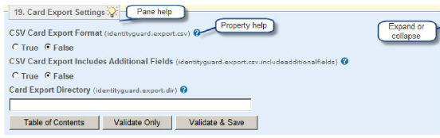

|
IdentityGuard Server 13.0 Administration Guide |
|
IdentityGuard Server 13.0 Administration Guide |
The Properties Editor Table of Contents links you to every category of property that administrators can view and change. Click any entry in the Table of Contents to switch to that category.
Alternatively, you can scroll through all property categories. The Properties Editor is constructed as a single Web page for ease of use and accessibility.
Each group or category of related properties appears in its own pane. On any property category pane, click the Table of Contents button to return to the Table of Contents.
Each category pane includes an expand and collapse button in the top right corner. Click the expand and collapse button to reduce a property pane to just its title bar. Click it again to see all the properties in the pane.
Each category pane provides general help about the category. Click the light bulb icon on the title bar to open the pane help Click it again to close it.
Each property on the pane has its own help. Click the question mark icon next to the property. This opens a pop-up window. To close the window, click the Close button (X) in the top right corner.

Many properties require you to enter path names. Whenever possible, use the $identityguard.home variable to define the file path relative to the Entrust IdentityGuard home directory, rather than specifying the file location as an absolute path. This prevents problems due to typing errors, and saves you a lot of effort if your Entrust IdentityGuard home directory changes.
Alternatively, you can enter path names and other variables in the following format: ${identityguard.home}.
Some sensitive property values should be encrypted, for example, the database or LDAP password. Such properties include the Encrypt option, which is enabled by default.
If you need to change an encrypted value, replace it with a new clear text value. Make sure Encrypt is enabled. Entrust IdentityGuard encrypts the value when you save the change. It is stored as an encrypted value in the properties file. Encrypted values for passwords or other sensitive data are not shown in the audit file.
The Properties Editor audit file includes:
● new properties added
● properties removed
● properties for which the value has changed
Each property category pane includes the Validate Only button. When you change a property, you can click this button to verify the settings. The Properties Editor checks all property values, not just those values associated with the current property pane. A dialog box appears informing you if all settings are valid or not. If there is an error, the dialog lists the problem properties. The Properties Editor highlights any invalid properties in red.
Each property category pane includes the Validate & Save button. When you want to save changes to one or more properties, click this button. The Properties Editor checks all property values. If there are no errors, a dialog box appears informing you of the settings you changed and prompts you to continue. Click OK to save the changes. This applies to all properties, not just those in the current pane. The page refreshes and the Table of Contents reappears.
Note: More than one administrator can use the Properties Editor simultaneously, so it is possible for a property to be set by more than one person. The Properties Editor does not save changes to any properties if someone else has made modifications since your Property Editor session began.
The Table of Contents includes the Discard Changes button. Click it to reset all properties to the values that are currently in effect. This reverses any changes you have made (but not saved) and reveals any changes made by other administrators who are simultaneously editing the properties. You are asked to confirm the action. Click OK to continue. This action also logs you out if the Properties Editor was idle longer than the idle timeout limit, and you must log back in after confirming the Discard Changes action.
The Properties Editor always keeps a backup of the previous property settings. After the Properties Editor is used at least once to make changes, the Table of Contents page also has a Restore From Backup button that acts like a toggle. Click this button once to load the previous property settings and replace your new settings. Click it again to reverse the restore operation.